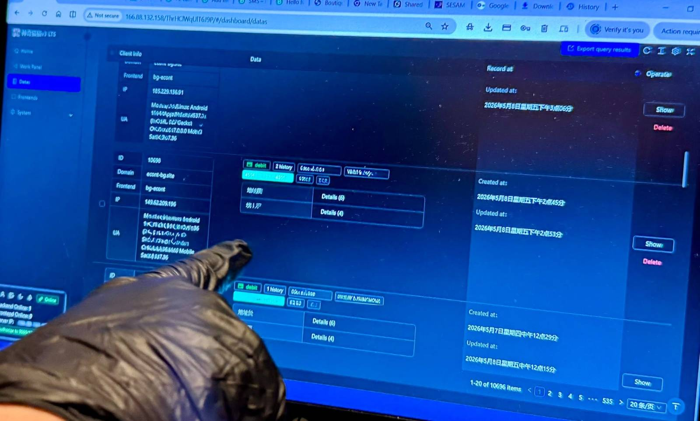
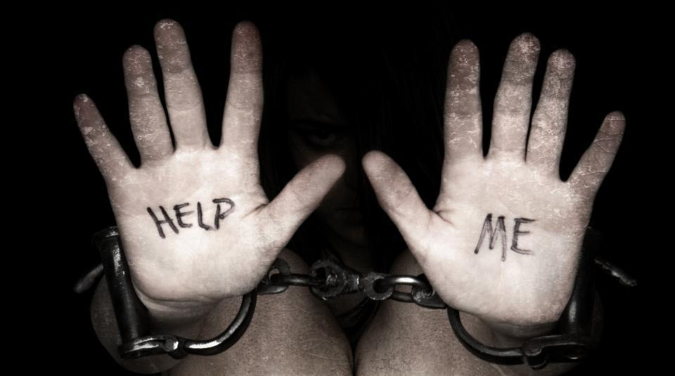
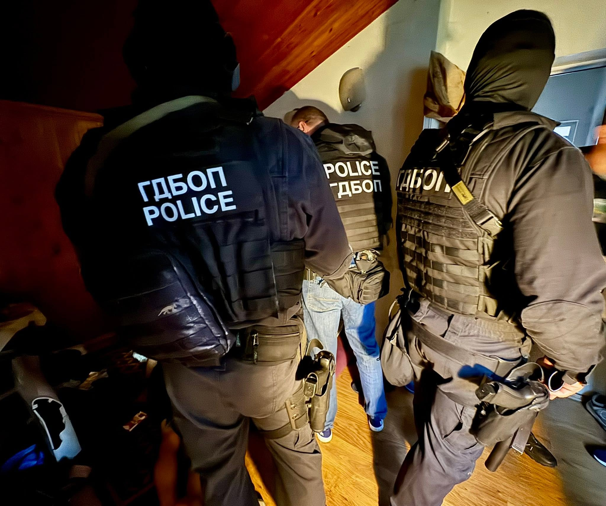
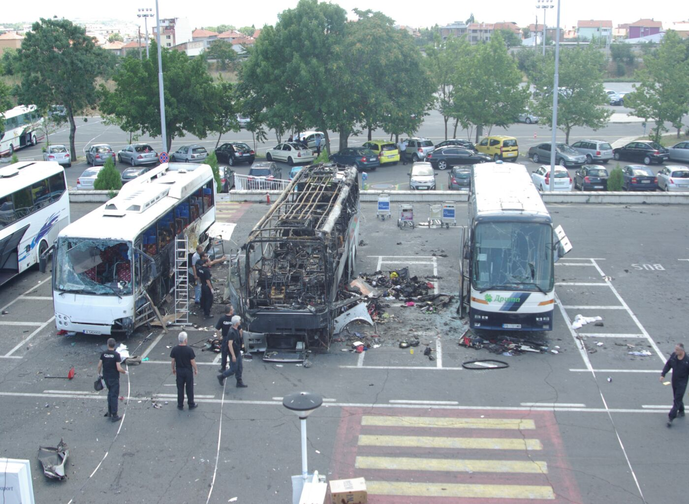
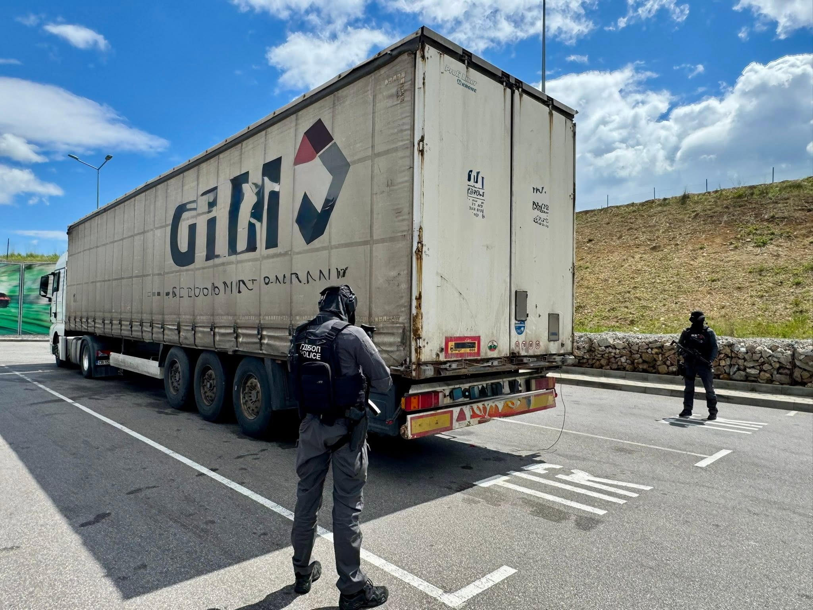
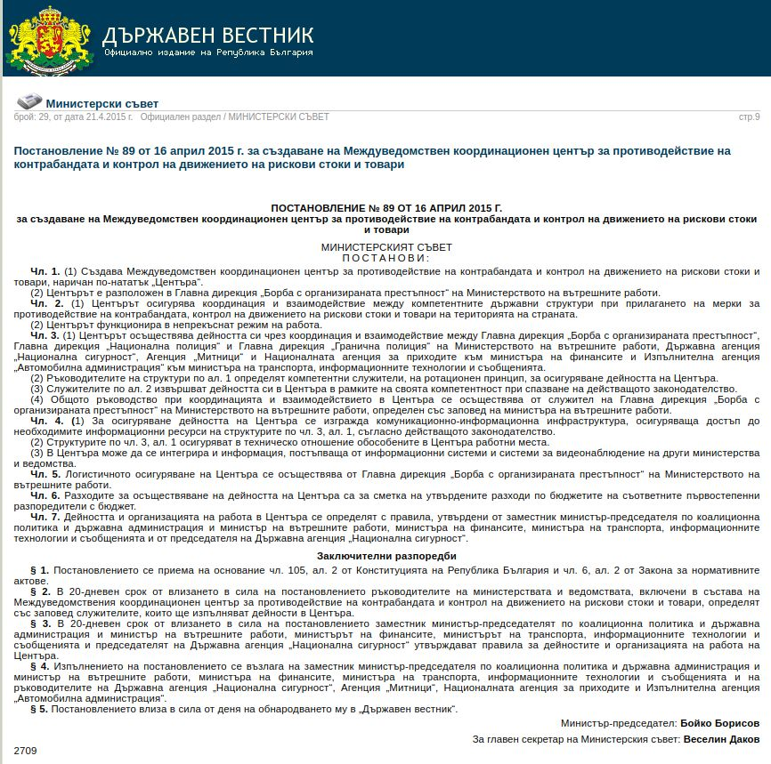

Редица специализирани направления, обхващащи целия спектър на противодействието на организираната престъпност на територията на Република България и отвъд нейните граници.
Направление „Наркотици“ при ГДБОП-МВР противодейства на престъпления, извършвани от местни и транснационални престъпни структури с наркотични вещества. Съобразно функционалната си компетентност отделът събира, обработва и анализира информация за съпричастността на организирани престъпни групи към незаконен трафик, производство и разпространение на наркотични вещества и прекурсори, като осъществява непрекъснат информационен обмен и взаимодействие с национални и чуждестранни правоохранителни служби.
В съответствие със законовите си функции и задачи служители от направление „Наркотици“ при ГДБОП-МВР участват в екипи, работни групи и комисии, създадени съвместно с други държавни органи, служби и органи на други държави и международни организации, в борбата с организираната престъпност в сферата на наркотиците и психотропните вещества.
Последните години поднесоха нови предизвикателства, свързани с наркотиците — нараства динамиката на поява на нови психоактивни вещества (дизайнерски наркотици), появяват се нови химикали за тяхното производство, нови начини на трафикиране и разпределителни канали.
Новите психоактивни вещества са опит да се избегне правният контрол чрез промяна в химическия състав на познатите синтетични наркотици. Пристрастяването към тях е същото като към „традиционните“ и дори се увеличава, което привлича злоупотребяващите с наркотични вещества.
Контролът на „дизайнерските наркотици“ не е поставен под единно пряко приложимо европейско и международно законодателство. Бързо развиващите се тенденции за нелегален трафик и пазар на тези вещества наложиха през 2011 г. да бъдат приети промени в Закона за контрол върху наркотичните вещества и прекурсорите и създадена нова Наредба на Министерски съвет за класифициране на веществата като наркотични. Тези нормативни промени осигуряват гъвкав контрол върху новопоявяващите се наркотични вещества и по този начин в рамките на Европейския съюз България притежава един от най-ефективните контролни механизми върху тях.
Направление „Трафик на културни ценности“ при ГДБОП-МВР е специализирано структурно звено, чиято основна цел е да противодейства на незаконния трафик на културни ценности от и през територията на Република България към други страни. Дейността на сектора е регламентирана в чл. 39, ал. 2, т. 7 от Закона за Министерството на вътрешните работи. Тя се извършва в контекста на разследване както на организираните престъпни групи, така и спрямо отделни техни членове и всички видове престъпни деяния, предхождащи и съпътстващи трафика.
Усилията на сектора са съсредоточени не само към предотвратяване на незаконното изнасяне и продажба извън страната на българското културно наследство и залавянето на отделни предмети, но и към цялостното и трайно неутрализиране на престъпните групи, свързани с подобна незаконна дейност.
В резултат на работата на сектора от 2006 г. до момента, на българската държава са върнати десетки хиляди движими културни ценности, голяма част от които представляват уникални произведения на древното изкуство.
Служителите от сектора взаимодействат успешно с всички български и чуждестранни институции (включително и извън системата на МВР и Агенция „Митници“), работещи за опазването на културното наследство, предлагат и развиват съвместни проекти в тази насока.
Дирекция „Киберпрестъпност“ при ГДБОП-МВР е сформирана на 15 март 2023 г. Тя е първата дирекция в структурата на Главна дирекция „Борба с организираната престъпност“.
Противодействието на киберпрестъпността в България води началото си от март 1998 година, когато в тогавашната структура на НСБОП (днес ГДБОП) е сформиран сектор „Интелектуална собственост и компютърни престъпления“. През годините съставът, наименованието и капацитетът на това звено се увеличават и то прераства в отдел при ГДБОП, а в днешни дни — дирекция.

Дирекция „Киберпрестъпност“ изпълнява задачи по противодействие на организирани престъпни групи и отделни лица, извършващи:
Служителите от дирекцията взаимодействат с правителствени организации, частни фирми, фондации и граждани с цел навременно противодействие на престъпления, в които се използват високотехнологични средства и похвати.
От месец февруари 2007 г. в рамките на това звено функционира Националният контактен пункт 24/7 за запазване на компютърно-информационни данни. Той е създаден съгласно Конвенцията за киберпрестъпленията от Будапеща през 2001 г., като основната му цел е осъществяване на навременен и директен контакт със служители на полицейски или правоприлагащи органи, пряко ангажирани в борбата с киберпрестъпността по света.

Служителите от специализираното направление „Трафик на хора“ при ГДБОП-МВР приоритетно извършват следните дейности:
За установяване на лица, съпричастни към трафика на хора с цел:
Пресичане дейността на организирани престъпни групи, съпричастни към трафик на хора, независимо от вида на експлоатация.

Направление „Трафик на мигранти“ при ГДБОП-МВР противодейства на организирани престъпни групи, ангажирани с незаконното превеждане през граница и каналджийството на мигранти през територията на Република България.
Дейността включва разкриване и неутрализиране на престъпни мрежи, събиране на доказателства за наказателно преследване на извършителите и взаимодействие с национални и международни партньори — Европол, Интерпол, гранични и миграционни служби.
Структурата на направление „Контратероризъм“ включва няколко сектора, служителите в които изпълняват следните основни задачи:

Направление „Корупция“ при ГДБОП-МВР осъществява оперативно-издирвателна дейност съгласно чл. 8 от ЗМВР за разкриване, предотвратяване и пресичане на престъпления и други нарушения на длъжностни лица от висшите етажи на властта, съдебната, държавната и местната власт.
Направлението взаимодейства и извършва координирани действия и мероприятия с други специализирани български и чужди структури за противодействие на корупцията.
Направление „Изпиране на пари“ при ГДБОП-МВР осъществява оперативно-издирвателна дейност за разкриване, предотвратяване и пресичане на престъпления, изразяващи се в изпиране на пари и измами с фондове на Европейския съюз, както и за издирване и проследяване на имущества и капитали, придобити от престъпна дейност.
Изпирането на пари представлява прикриване на действителния произход на средства, придобити от престъпна дейност, чрез поредица от привидно законни финансови операции, така че средствата да изглеждат с легален произход. Измамите с фондове на Европейския съюз включват неправомерно получаване или разходване на средства по европейски програми чрез документи с невярно съдържание, фиктивни проекти и завишени или несъществуващи разходи.
Често използван способ за изпиране на пари е привличането на т.нар. „финансови мулета“. Повече за това как да разпознаете и избегнете тази роля вижте в кампанията „Не бъди муле“.
Направление „Престъпления против данъчната и осигурителна система“ при ГДБОП-МВР противодейства на организирани престъпни групи, извършващи данъчни и осигурителни престъпления по смисъла на глава седма, раздел IV от Наказателния кодекс (чл. 255–260).
Дейността е насочена към разкриване и пресичане на: избягване на установяването или плащането на данъчни задължения в големи и особено големи размери; измами с данък върху добавената стойност, включително схеми с фиктивни доставки и с т.нар. „липсващ търговец“; използване на документи с невярно съдържание и счетоводни записвания пред органите по приходите; както и неудържането и невнасянето на дължими данъци и задължителни осигурителни вноски.
Разследванията се провеждат в тясно взаимодействие с Националната агенция за приходите (НАП), Агенция „Митници“ и компетентните прокуратури, включително по линия на защитата на финансовите интереси на Република България и на Европейския съюз.
Служителите от направлението осъществяват дейност по превенция и разкриване на престъпления, свързани с финансово-кредитната система.
Основни задачи са предотвратяване и разкриване на:
Благодарение на работата на служителите са разкрити и предотвратени множество престъпления, свързани с фалшификации на евро, лева, щатски долари, кражби на данни от банкови карти, както и кражба на самоличност.
Предотвратени са загуби за милиони левове и евро, както от бюджета на страните от ЕС и България, така и на отделни граждани.

Основни задачи на служителите са противодействие и пресичане на организирани престъпни групи, ангажирани с:
Дейността на направление „Контрабанда“ е съсредоточена предимно върху ограничаване нелегалното производство, разпространението и транзитирането на цигари без бандерол, производството и разпространението на високоалкохолни напитки без или с неистински бандерол, потреблението на горива, за които не е заплатен дължимият акциз и ДДС, и стоковата контрабанда.
Направление „Разследване“ при ГДБОП-МВР е създадено с цел провеждане на разследвания по досъдебни производства на територията на цялата страна, свързани с образуване, участие и ръководене на организирани престъпни групи и престъпления, извършени от или по поръчения на организирани престъпни групи.
Междуведомственият координационен център за противодействие на контрабандата и контрол на движението на рискови стоки и товари е създаден през месец април 2015 г. с постановление на Министерски съвет.
Центърът осигурява координация и взаимодействие между компетентните държавни структури при прилагането на мерки за противодействие на контрабандата и контрол на движението на рискови стоки и товари.
Състои се от представители на следните държавни структури:
Центърът поддържа 24-часово оперативно дежурство, като събира, обработва и анализира информация за стоки и товари по конкретни случаи, както и за стоки, предмет на контрабанда. Извършва анализ и мониторинг на рискови транспортни средства, стоки и товари на територията на страната чрез координирани съвместни действия на държавните структури, представени в центъра.
